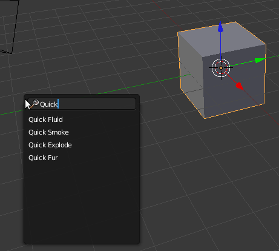

Os Quick Effect Operators são atalhos que permitem ativar rapidamente as configurações básicas para criar Fluídos (Fluids), Fumo/fogo (Smoke/fire), Explosões (Explode) e Pêlos (Fur). Os atalhos aplicam uma configuração básica ao objeto selecionado. Na esmagadora maioria dos casos, é necessário proceder a ajustes nas configurações.
Selecione o objeto que pretende definir como Domain (no Fluid ou Smoke), como emissor (no Fur) ou explodir, clique na Barra de Espaços e escreva o nome do Quick Effect Operator que pretende utilizar.
Depois de utilizar o Quick Effect Operator, pode (e deve!) otimizar as configurações para obter os melhores resultados.
